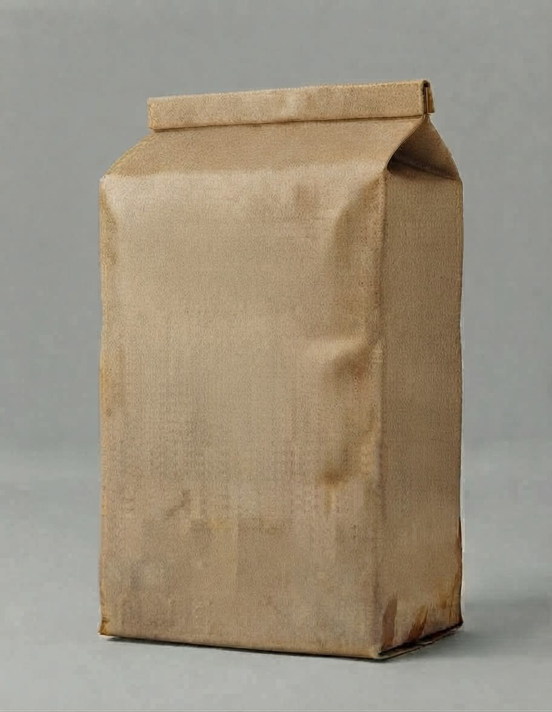

접수 신청
시료를 가져오기 전에 접수 신청을 남기면 창구에서 바로 접수번호를 붙입니다.
신청서
가상의 기관입니다. 신청은 전송되지 않습니다.
고칠 곳
우편 접수
- 양
- 봉지마다 말린 흙 500 g 안팎
- 봉지
- 지퍼 비닐봉지 · 두 겹 · 이름 · 필지 · 작물 · 채취일 적기
- 상태
- 그늘에서 말린 흙 · 돌 · 뿌리 골라냄
- 안 받는 것
- 젖은 흙 · 비료가 섞인 흙 · 거름 더미 흙 · 화분 상토
- 밤 반입함
- 정문 오른쪽 철제 상자 · 다음 날 09:00 접수 처리
